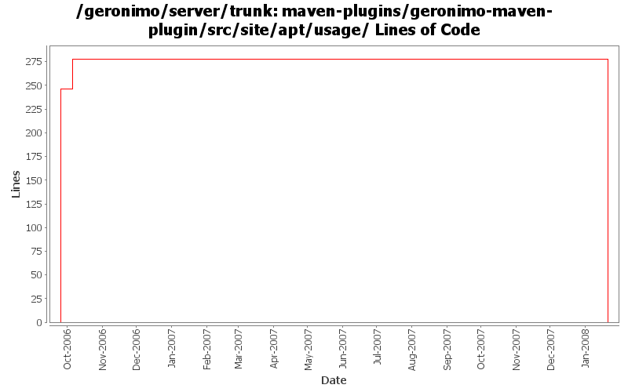

[root]/maven-plugins/geronimo-maven-plugin/src/site/apt/usage

| Author | Changes | Lines of Code | Lines per Change |
|---|---|---|---|
| jdillon | 9 (100.0%) | 533 (100.0%) | 59.2 |
(GERONIMO-3771) Moved maven-plugins/* to buildsupport/*, updated groupId to org.apache.geronimo.buildsupport
0 lines of code changed in 2 files:
Update assembly names to match what we have
Using javaee instead of j2ee
7 lines of code changed in 2 files:
Refactored to allow a set of optionSet id's to be used to select more than one
Removed debug* bits this can now be done with optionSets
27 lines of code changed in 1 file:
Add goal to simply wait for a server to be started
12 lines of code changed in 1 file:
Adding APT friendly ASL sub-header, testing props for keyword expansion
244 lines of code changed in 1 file:
(GERONIMO-2426) Site docs for module usage
243 lines of code changed in 2 files: